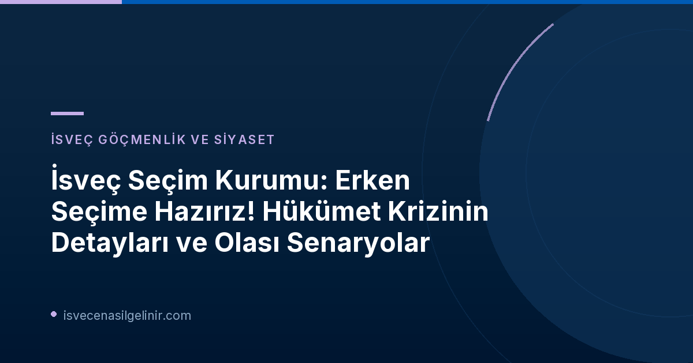

İsveç'te Hükümet Krizi ve Erken Seçim İhtimali
İsveç'te genel seçimlerin üzerinden 44 gün geçmesine rağmen, yeni bir hükümetin kurulması konusundaki belirsizlik devam ediyor. Riksdagen'deki ilk başbakan oylamasının başarısızlıkla sonuçlanması, ülkeyi anayasal bir çıkmaza sürükleme potansiyeli taşıyor. İsveç anayasasına göre, eğer dört başbakan oylamasından da sonuç alınamazsa, zorunlu olarak erken seçime gidilmesi gerekiyor. Bu durum, Valmyndigheten'i (İsveç Seçim Kurumu) yoğun bir hazırlık sürecine itmiş durumda.
İsveç Seçim Kurumu: Erken Seçim İçin Tamamen Hazırız
Valmyndigheten kanseri Anna Nyqvist, SVT Morgonstudion'a yaptığı açıklamada, kurumun olası bir erken seçime tamamen hazır olduğunu vurguladı. Nyqvist, "Biz seçimler konusunda uzmanız ve her an erken seçim yapmaya hazır olma görevimiz var," dedi. Normal seçim süreçlerine kıyasla, olası bir erken seçim çok daha kısıtlı bir zaman diliminde organize edilmek zorunda. Talmannın kararından itibaren üç ay içinde seçimin yapılması gerekiyor ki bu, İsveç'in kapsamlı seçim süreçleri için oldukça kısa bir süre.
İsveç'te Erken Seçim Süreci ve Detayları
- Erken Seçim Kararı: Riksdagen'de dört başbakan oylamasından da sonuç alınamazsa zorunlu hale gelir.
- Süre: Talmannın kararından sonra üç ay içinde yapılmalıdır.
- Seçim Kapsamı: Sadece Riksdagen (parlamento) için seçim yapılır. Bölgesel ve belediye seçimleri bu kapsamın dışındadır.
- Zorluklar: Normal bir seçime göre çok daha kısa bir sürede tüm hazırlıkların tamamlanması gerekir.
İsveç'in siyasi yapısı ve vatandaşlık hakları hakkında daha detaylı bilgi için sverigemedborgarskapsprov.com adresini ziyaret edebilirsiniz.
Valmyndigheten ayrıca, normal seçimlerde ortaya çıkabilecek hatalar nedeniyle bazı belediyelerde yapılabilecek olası tekrarlanan belediye seçimleri için de hazır olduklarını belirtti. Seçim İtiraz Kurulu (Valprövningsnämnden) tarafından halen incelenen bu tür davalar bulunuyor.
Olası Erken Seçimin Siyasi Dinamikleri: Kim Kazanır, Kim Kaybeder?
SVT'nin politika muhabiri Julia Lindvall'a göre, olası bir erken seçimin siyasi partiler arasında kazananları ve kaybedenleri olacaktır. Lindvall, Morgonstudion'daki açıklamasında, "Şu anda mecliste çoğunluğu elinde bulunduran 'kırmızı-yeşillerin' (Sosyal Demokratlar, Yeşiller ve Sol Parti) bir erken seçimden daha fazla kaybedecek şeyi olduğunu söyleyebilirim," yorumunda bulundu. Bu analiz, mevcut koalisyonun kırılganlığını ve yeni bir seçimin güç dengelerini değiştirebileceği ihtimalini ortaya koyuyor.
Hükümet kurma görevini ilk olarak Sosyal Demokratların lideri Magdalena Andersson üstlenmiş ancak başarılı olamamıştı. Ardından Merkez Parti'den (C) Elisabeth Thand Ringqvist'e verilen son sondaj görevi de Pazartesi günü (26 Ekim 2026) orta yol hükümeti için bir çoğunluk bulunamadığı açıklamasıyla sonuçlandı. Bu durum, İsveç'in yakın tarihindeki en çetrefilli hükümet krizlerinden birine işaret ediyor.
Gelecek Adımlar ve Talman'ın Kararı
Şimdi top tamamen Talman'da (Meclis Başkanı). Talman, ya yeni bir başbakan oylamasına gitme, ya başka bir partiye sondaj görevi verme ya da Elisabeth Thand Ringqvist'e daha fazla zaman tanıma kararı verecek. Tüm bu seçenekler, İsveç siyasetinin önümüzdeki haftalarda nasıl bir yön alacağını belirleyecek kritik kararlar olacak.
Ek Bilgiler ve Referanslar
Valmyndigheten'in 16 Ekim 2026 tarihinde yaptığı bir açıklamaya göre, olası bir erken seçimin maliyetinin oldukça yüksek olacağı belirtilmişti. Siyasi belirsizliğin İsveç ekonomisi ve toplumu üzerindeki etkileri, bu sürecin yakından takip edilmesini gerektiriyor.
İsveç'te Yaşam ve Vatandaşlık Süreci Hakkında Bilgi Alın
İsveç'teki siyasi gelişmeler, ülkenin genel durumu hakkında bilgi edinmek isteyen birçok kişiyi yakından ilgilendiriyor. İsveç'te yaşamak, çalışmak veya vatandaşlık almak gibi konularda güncel ve doğru bilgilere ulaşmak için sitemizi keşfedin.